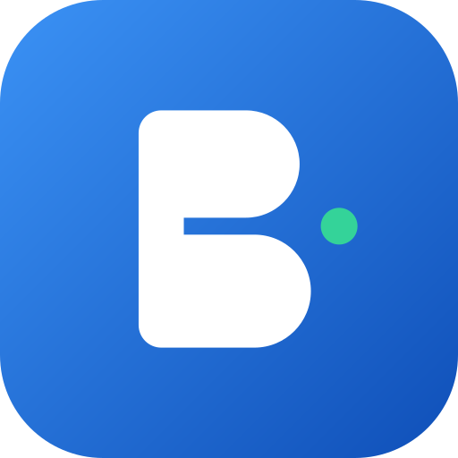

Buddy brand kit
Two directions for the B, all with the same custom monoline wordmark. Mint dot = the hand-over: work moving from one agent to the next.
One-line B
A single ribbon that never lifts: one flow from start to finish. Shares its stroke with the wordmark.
Mark
App icon
On dark
One colour
Lockup
Lockup on dark
Small sizes
Faceted B
A solid B with a soft light across it. The most legible and most premium at small sizes.
Mark

App iconOn dark
One colour
Lockup
Lockup on dark
Small sizes
Wordmark
Drawn from circles, stems and arcs, so it needs no font and stays sharp at any size.
Colour
Buddy blue#4aa0f8 to #1456c4
Deep blue#0f4fb8
Ink#0a2a63
Hand-over mint#1f9d6b
Mint on dark#34d399
Clear space: keep at least the width of the stem on every side. Minimum size: 16 px for the mark, 24 px tall for the lockup. Never stretch, recolour the dot or add shadows.